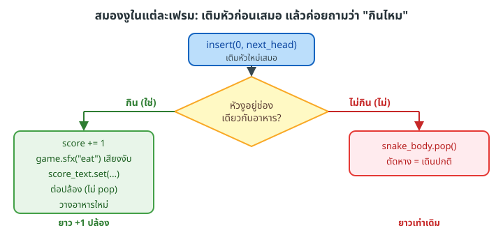

ขั้น 3 — สมองงู: เช็คกิน → โต → คะแนน → เสียง
next_head = [snake_body[0][0] + step_col, snake_body[0][1] + step_row]
snake_body.insert(0, next_head)
ate_food = (next_head == [food_square.x // CELL_PX, food_square.y // CELL_PX])
if ate_food:
score += 1
game.sfx("eat")
score_text.set("Score: %d" % score)
body_squares.append(game.Box(0, 0, CELL_PX - 2, CELL_PX - 2, game.GB_DARK))
game.Text("Nice bite!", 320, 180, game.GB_LIGHT)
place_food_at_random_empty_cell()
else:
snake_body.pop()
ผลต่อความยาวงูในแต่ละเฟรม สรุปเป็นเงื่อนไขเดียว:
len′={len+1lenถ้ากิน (insert หัว, ไม่ pop)ถ้าไม่กิน (insert หัว + pop หาง)

จุดสำคัญคือ ตอนกินเราไม่เรียก pop() งูจึงยาวขึ้น 1 ปล้อง